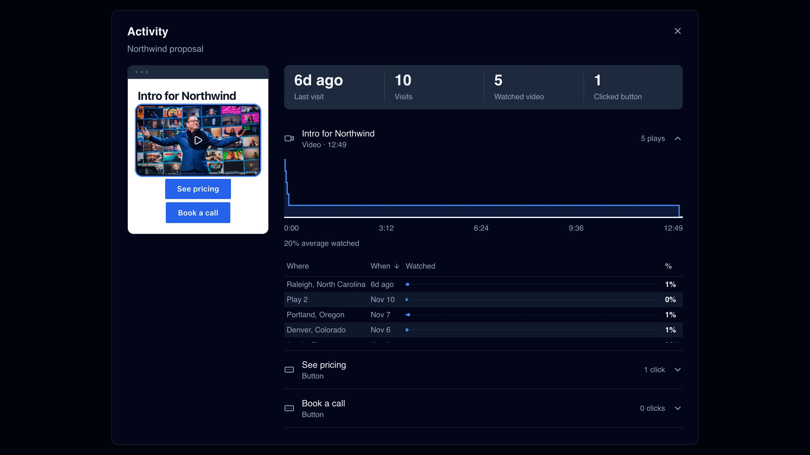
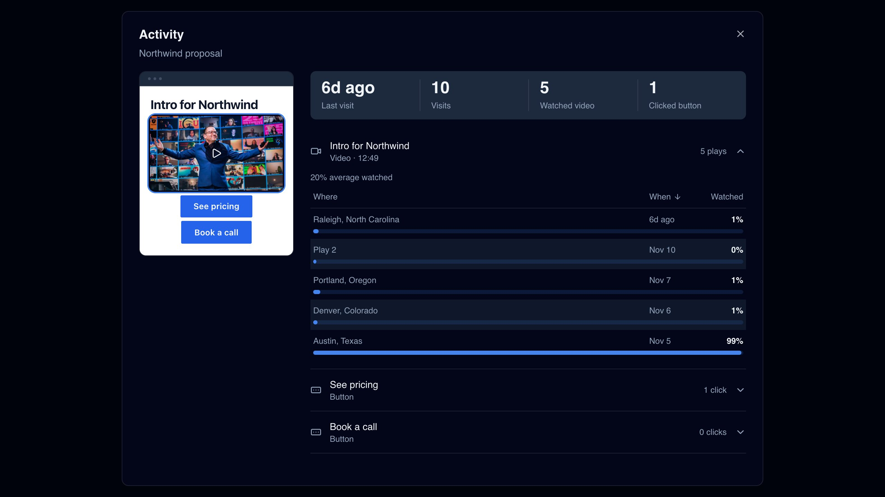
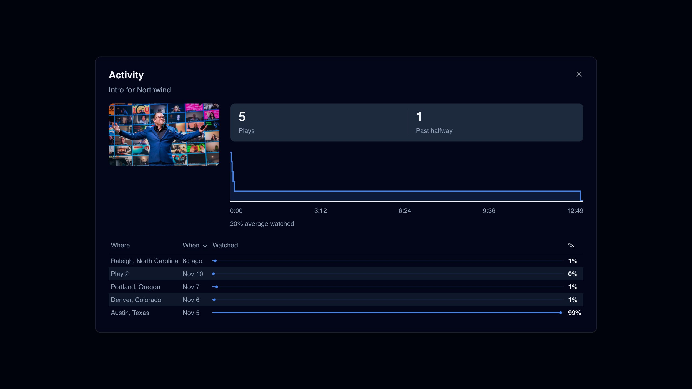
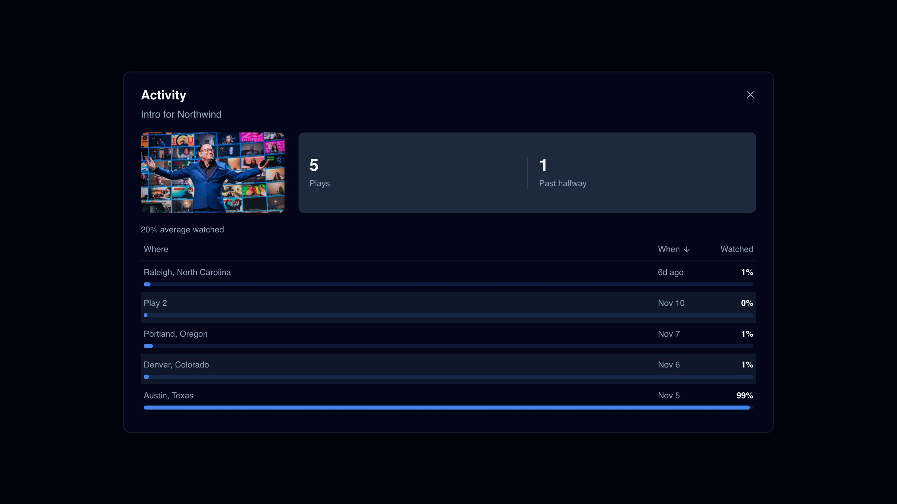
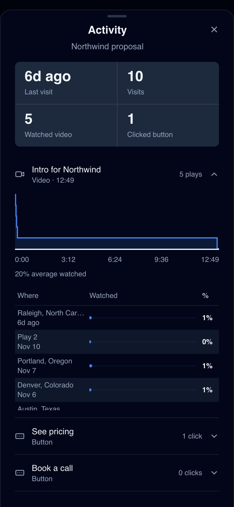
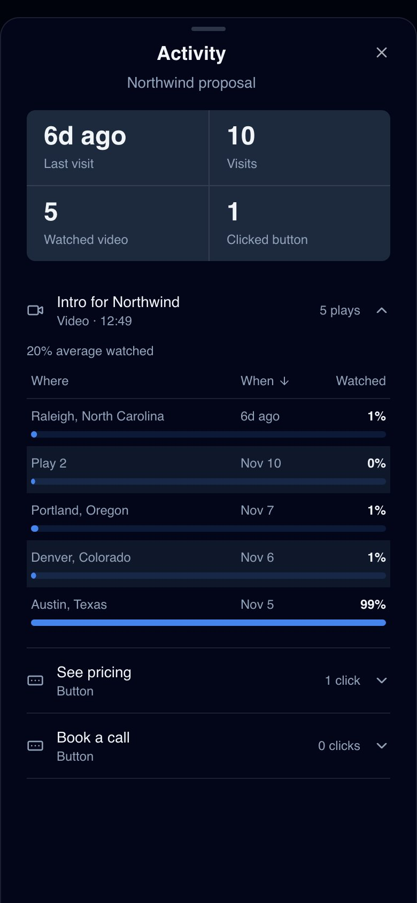
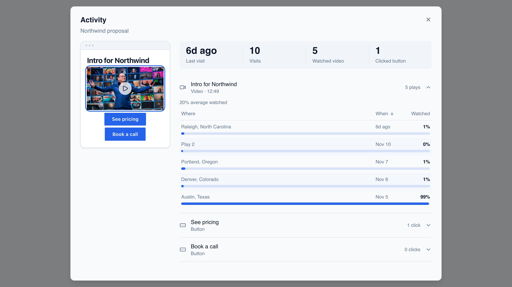
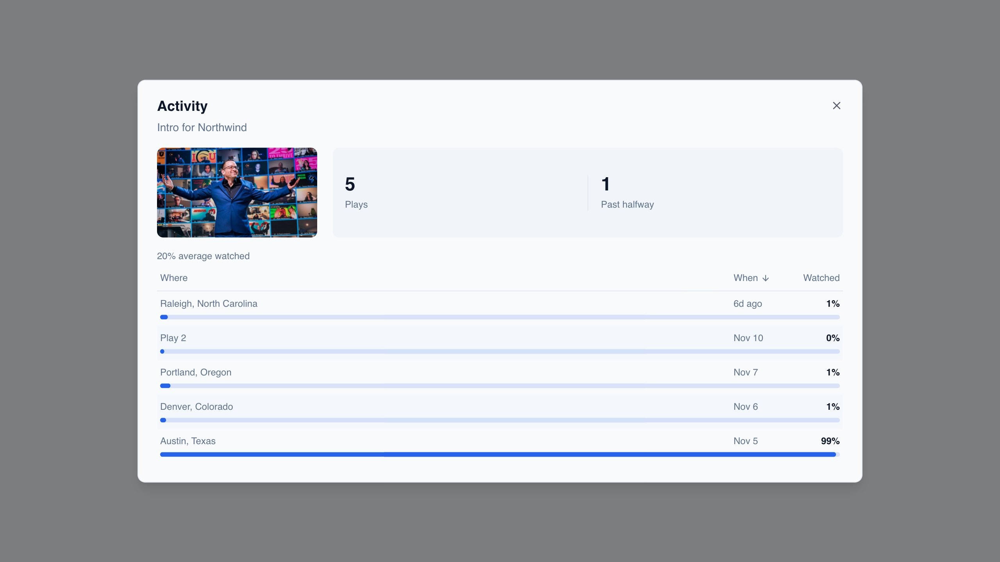

Activity: one row per play
Sample data: a 12:49 video with five plays. One watched 99%, four left within seconds. Captured from the real components at 1280×720.
Page Activity


Library video Activity


Phone, 390 px


Light

